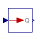
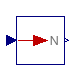

Library Contents
Search
Download
QCalc.Blocks
Input/output blocks to convert units
Information
Extends from QCalc.Icons.Package (Icon for standard packages (from MSL 3.2.1)).
Package Contents
| Name | Description |
|---|---|
| Num2Qty | Convert a number to a quantity using a lambda unit |
| Qty2Num | Convert a quantity to a number using a lambda unit |
 QCalc.Blocks.Num2Qty
Convert a number to a quantity using a lambda unit
Information
To convert a number to a quantity using a scalar unit, instead use Modelica.Blocks.Math.Gain with k set to the unit.
Parameters
| Type | Name | Default | Description |
|---|---|---|---|
| degC | u | redeclare QCalc.Units.Interf… | Lambda unit |
Connectors
| Type | Name | Description |
|---|---|---|
| input RealInput | n | Connector for the number |
| output RealOutput | q | Connector for the quantity |
Modelica definition
block Num2Qty "Convert a number to a quantity using a lambda unit"
replaceable QCalc.Units.Interfaces.degC u constrainedby
QCalc.Units.Interfaces.LambdaUnit "Lambda unit";
Modelica.Blocks.Interfaces.RealInput n "Connector for the number";
Modelica.Blocks.Interfaces.RealOutput q "Connector for the quantity";
equation
q = n*u;
end Num2Qty;
 QCalc.Blocks.Qty2Num
Convert a quantity to a number using a lambda unit
Information
To convert a quantity to a number using a scalar unit, instead use Modelica.Blocks.Math.Gain with k set to the reciprocal of the unit.
Parameters
| Type | Name | Default | Description |
|---|---|---|---|
| degC | u | redeclare QCalc.Units.Interf… | Lambda unit |
Connectors
| Type | Name | Description |
|---|---|---|
| input RealInput | q | Connector for the quantity |
| output RealOutput | n | Connector for the number |
Modelica definition
block Qty2Num "Convert a quantity to a number using a lambda unit"
replaceable QCalc.Units.Interfaces.degC u constrainedby
QCalc.Units.Interfaces.LambdaUnit "Lambda unit";
Modelica.Blocks.Interfaces.RealInput q "Connector for the quantity";
Modelica.Blocks.Interfaces.RealOutput n "Connector for the number";
equation
q = n*u;
end Qty2Num;